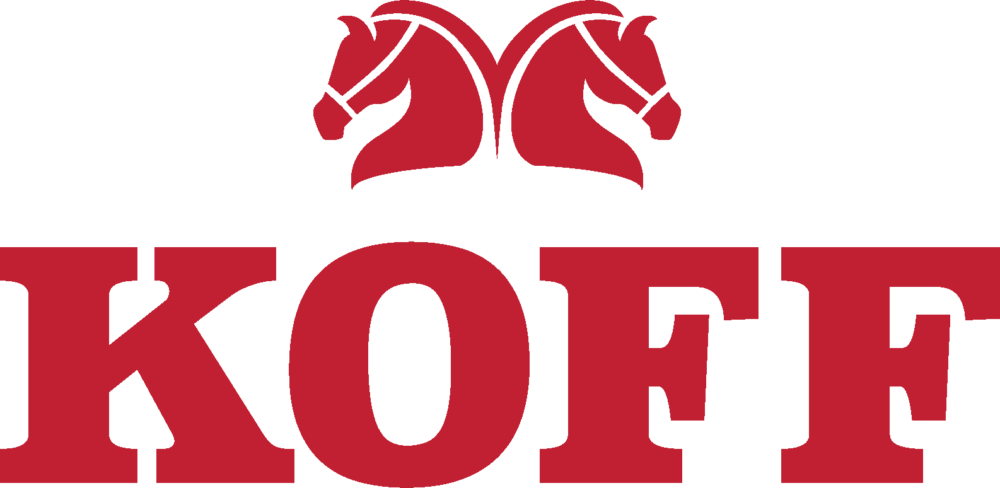
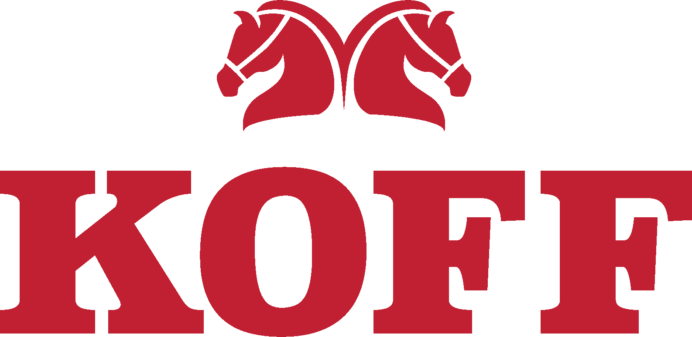

TURUN FESTIT TARJOAA!
 |
 |
|  |
Integraatiofest 2024
TURUN FESTIT TARJOAA!
|
|
|  |
TURUN FESTIT TARJOAA!
|
|
||
 |
 |
PERJANTAI


| 9.00-10.00 | Konferenssipassien jako / Deltan toimisto, Quantum 1. kerros |
|
| 10.00-14.00 | Luennot / Natura IX |
|
| 10.00-10.20 | Aloitusinfo | |
| 10.20-10.45 | Anton Nykänen: Algorithmiq esittäytyy | |
| 10.45-11.10 | Vitaliy Gurov: TEK esittäytyy | |
| 12.10-13.10 | Petri Väisänen: Uusia ikkunoita maailmankaikkeuteen | |
| 13.10-13.35 | Mikko Jaskari: Alkulukuja etsimässä | |
| 13.35-14.00 | Johan Lindén: Physics show: Some demonstrations involving liquid nitrogen | |
| 14.00-17.00 | Excut | |
| 17.00-18.30 | Majoitus avoinna | |
| 19.00-23.00 | Sitsit / T-talo |
|
| 21.00 | Majoitus avoinna | |
| 23.00-04.00 | Jatkot / Night Club Marilyn |
|
LAUANTAI

| 9.00-10.00 | Aamupala / Steiner-koulu |
|
| 11.00 | Majoitus sulkeutuu | |
| 10.15-13.35 | Luennot / Natura IX |
|
| 10.15-10.35 | Evert-elokuva | |
| 10.35-11.00 | Kimmo Pyyhtiä: Lounasseurueen maksimaalinen ruokapöytien täyttö minimaalisella sosiaalisella kiusallisuudella opiskelijaravintolassa ruuhka-aikaan | |
| 11.00-11.25 | Sofia Pöntys ja Pelin Yildirim: Plasmons and Superconductors | |
| 11.25-11.45 | Lauri Heinonen: Matti Nykäsen tilastotiede | |
| 12.45-13.35 | Mikko Miettinen: Hampurilaismalli - epäpuhtauksien vaikutus puolijohdelaitteisiin kerroshampurilaisella havainnollistettuna | |
| 13.45-14.45 | Haalarimerkkitori ja posterisessio / Natura |
|
| 14.00-16.00 | SFMO:n syyskokous / Natura IX |
|
| 14.00-17.00 | Majoitus avoinna | |
| 14.15-16.15 | PLANCS/IMC / QM2, QM3 |
|
| 20.00-04.00 | Bileet / Q-talo |
|
| 21.00 | Majoitus avoinna | |
SUNNUNTAI

| 12.00 | Majoituksesta poistuminen | |
| 10:00 - 16:00 | Sillis / Q-talo |
|
FESTIEN AIKATAULUT


LIIKENTEEN HOITAA FÖLI

Turku on pieni kaupunki suurella sydämellä. Kaikkialle keskusta-alueella pääsee kävellen. Jos kuitenkin haluat ajella bussilla, Fölin kyydillä pääsee!
Katsele Fölin aikataulut ja pysäkit Fölin sivuilta: www.foli.fi
KAUPUNKI (TURKU)
Kaikki tärkeimmät festien paikat löydät kartasta TÄÄLTÄ
Turun yliopisto sijaitsee aitiopaikalla aivan joen rannalla ison kukkulan päällä. Sinne pääsee vaikka tiedon portaita kiipeämällä.
MAJOITUSJUTTUJA
Festien majoitus sijaitsee Turun Steiner-koululla osoitteessa Kaivokatu 12, ja siellä nukutaan tuttuun tapaan lattialla eri tiloissa ainejärjestöittäin. Majoituksesta on matkaa yliopistolle 900 m, T-talolle 1,3 km, Q-talolle 1,7 km ja keskustaan 1,9 km. Majoituksen ja keskustan väliä kulkevat bussit 32, 42, ja 53(A). Bussiaikataulut näkee osoitteesta https://www.foli.fi/fi tai Föli-sovelluksesta.
Steiner-koulun ovet ovat koko viikonlopun lukossa, ja tästä syystä siellä on erikseen määriteltyinä aikoina kaksi valvojaa, jotka ovat avaamassa ovea, ohjaamassa festiläisiä oikeisiin tiloihin ja vastaamassa majoituspuhelimeen.
Majoituspuhelimen numero on [numero].
Majoitusvalvojat päivystävät Steiner-koululla seuraavasti:
Perjantaina klo 17:00-18:30 ja 21:00-00:00.
Lauantaina klo 00:00-10:00, 14:00-17:00 ja 21:00-00:00.
Sunnuntaina klo 00:00-11:00 (muista kellojen siirto la-su yönä tunnilla taaksepäin, viimeinen päivystysvuoro loppuu klo 11 talviaikaa tai klo 12 kesäaikaa).
Jos ennen perjantai-illan sitsejä ei halua tai ehdi käydä majoituksessa, tavaroille järjestetään kuljetus yliopistolta. Sunnuntaina majoituksesta on poistuttava viimeistään klo 12:00.
SUIHKUINFO
Majoituksessa tarjoillaan aamupala lauantaina klo 09:00-10:00.
Alkoholin ja muiden päihteiden käyttäminen ja esillä pitäminen on ehdottomasti kiellettyä koulun tiloissa ja alueella.
Majoituksen järjestäjä on Turun yliopiston matemaattisten ja fysikaalisten tieteiden opiskelijoiden yhdistys Delta ry, https://delta.utu.fi/. Festitoimikunnan puheenjohtajana tänä vuonna toimii Sanni Kivistö (Telegram @sekivisto).
Häirintäyhdyshenkilöinä toimii [nimet ja Telegramit].
YHTEYSTIEDOT
Integraatiofesteillä oli tänä vuonna tekijöitä. Kiitokset, ruusut ja miksei risutkin voi lähettää suoraan Turun yliopiston matemaattisten ja fysikaalisten tieteiden opiskelijoiden yhdistys Delta ry:lle
HYPE
EHDOTTOMASTI YHDET FESTEISTÄ - DEFINITIVT EN AV FESTERNA!

Aikataulu

Julkinen liikenne

Kaupunkikartta ja excut

HYPEVIDEO

Majoitusinfo

Yhteystiedot
TURUN FESTIT TARJOAA!
|
|